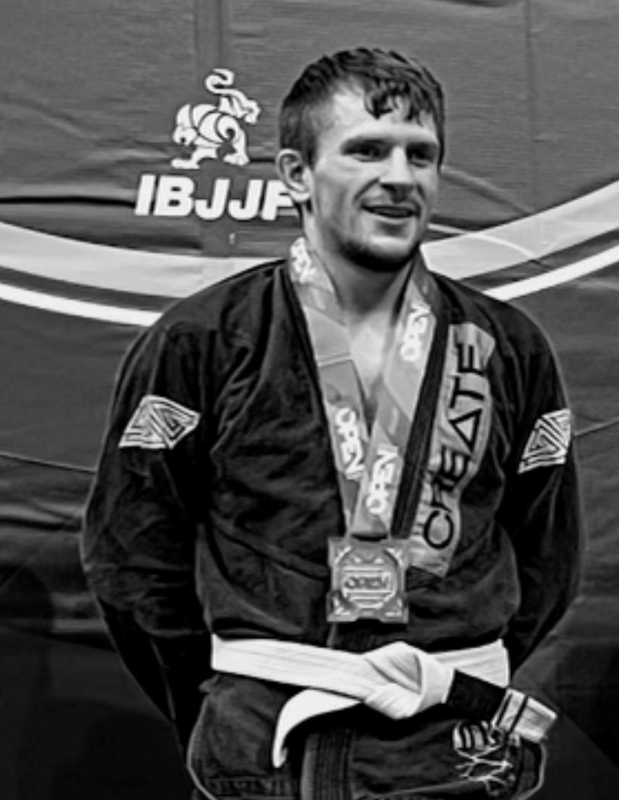

About Me

Coding is my new found passion!
Wrestling was my "identity" throughout my education. If you know a wrestler, you know
they are obsessed with food. Growing up, I owned my wrestling identity and
embraced my "relationship" with food. These two driving forces are what navigated me to
earning my Nutrition degree from Ohio Wesleyan University. I always thought my life
would evolve around wrestling and food. But I kind of felt unfulfilled. I thought
Brazilian Jujitsu might me that next step for me but I wanted to
learn something different and outside my comfort zone.
That is when it happened; that missing spark ignited the moment I "peeked" behind a
web page and began inspecting what every little piece of code impacted. Full-stack web
development calls to my passion; it incorporates creativity and problem solving and
even allows me to break it so I can improve it - in a separate Git branch, of course.
I love applying responsive design principles and watching web pages react; it is
oddly satisfying. I guess you could say I a like a web page; I'm moldable, but I
still maintain my creativity intact.
This is where I will update to include additionally learned skills as the class
progresses.